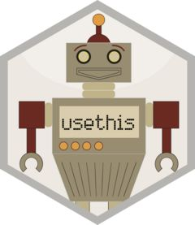
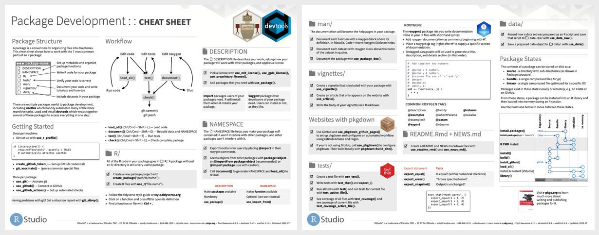
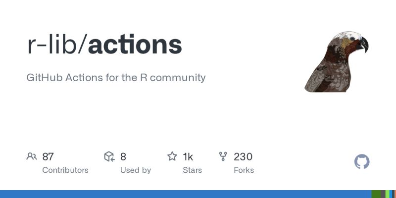
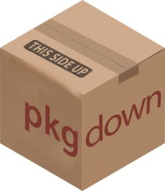
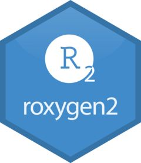
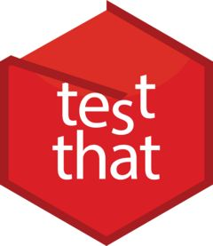
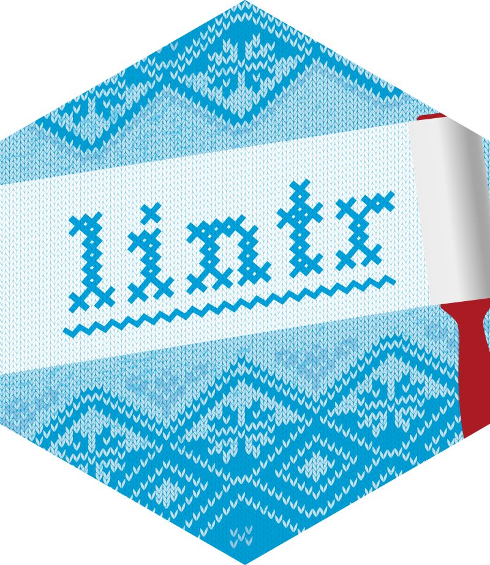

Modern R Package Development (Advent Calendar 2025)
Modern R package development
R package development can feel overwhelming… Documentation, testing, CI/CD, and CRAN submission, there are dozens of tools to learn!
What’s Changed?
The R ecosystem has evolved dramatically. Tools like usethis, pkgdown, and GitHub Actions have automated what used to be manual, error-prone work.
What You’ll Learn?
- Automated setup and infrastructure
- Beautiful, maintainable documentation
- Comprehensive testing strategies
- Advanced features and CRAN submission
Who is this for?
- First-time package developers starting fresh
- Experienced devs wanting to modernize their workflow
- Anyone who’s struggled with CRAN submission
- Teams establishing package development standards
usethis - Project Setup Automation
Automating repetitive package development tasks!
This package automates ALL the boilerplate
It enforces best practices that the R community has learned over decades
Key Functions
Why This Matters?
Each function:
- Sets up files with correct syntax
- Configures dependencies properly
- Follows CRAN requirements
- Uses community best practices
- Saves you from painful debugging later
Pro Tip: Set up your usethis options once!
Now every package inherits your preferences automatically!
📚 Resources: usethis.r-lib.org

devtools - Essential Development Workflow 🔧
Streamlines your package development workflow with key functions! ⚡
💡 Pro Tip: Use Ctrl/Cmd + Shift + L in RStudio to quickly run load_all()!
Use these functions to create an instant feedback loop
Why load_all() is Magic?
- It simulates installing your package WITHOUT actually installing it
- Changes appear instantly
- You can:
- Test functions immediately
- Try different approaches rapidly
- Keep your development flow uninterrupted
- Maintain state between iterations
The Check-Document-Test Loop
Hidden Gem
CRAN will reject packages for typos in documentation. Catch them locally first.
The Professional Flow
devtools eliminates friction from package development
📚 Resources: devtools.r-lib.org


GitHub Actions with r-lib/actions - CI/CD Setup 🚀
Automates package testing across multiple platforms and R versions! 🔄
One Command Setup
💡 Pro Tip: The standard check runs on Windows, macOS, and Ubuntu with multiple R versions.
What Actually Happens?
When you push code:
- GH Actions spins up 3+ machines
- Installs R on each
- Installs your dependencies
- Runs R CMD check
- Reports results back
- All in ~5-10 minutes
- You get a ✅ or ❌ immediately.
The Three Essential Actions for testing, metrics, and documentation
Coverage Tracking: The test-coverage action pushes to codecov.io, giving you a badge showing % of code tested. This isn’t vanity - it identifies untested functions that need attention. Public accountability drives quality.
Documentation Automation: The pkgdown action rebuilds your website on every push. Docs are ALWAYS current. Users always see up-to-date documentation.
Before pushing to CRAN, you KNOW your package works everywhere. That ✅ on your commits means:
- No platform-specific bugs
- Tests pass on all versions
- Documentation builds
- Coverage is tracked
- CRAN submission becomes routine
📚 Resources: github.com/r-lib/actions

.Rbuildignore and .gitignore Best Practices 📁
Control what gets included in your package build and git repository! 🎯
Two Different Jobs: .gitignore and .Rbuildignore. Confuse these and you’ll either leak secrets or bloat your package.
.gitignore: What stays OFF GitHub (API keys, local files, cache)
.Rbuildignore: What stays OUT of your CRAN package (README.Rmd, GitHub Actions, development files)
💡 Pro Tip: Use usethis::use_build_ignore() to add entries programmatically.
Package Structure with pkgdown Site Generation 🌐
Creates beautiful documentation websites for your packages! ✨
Setup
💡 Pro Tip: Use usethis::use_pkgdown_github_pages() for automatic deployment.
What pkgdown Does?
It transforms your package into a professional website:
- Function reference (all your roxygen docs)
- Vignettes (your tutorials)
- README (your intro)
- Changelog (your NEWS.md)
- Search functionality
Better docs = more users = more feedback = better package
The Reference Page
pkgdown automatically:
- Groups related functions
- Shows usage examples
- Links between functions
- Highlights code with syntax colors
- Makes everything searchable
- Your roxygen comments become interactive documentation
Customization without code: Change colors, navigation, layout - all configuration, no HTML/CSS.
GitHub pages integration
Now every push automatically:
- Builds your site
- Deploys to GitHub Pages
- Updates documentation so docs are always current
Function grouping example
Organise hundreds of functions into logical groups. Users find what they need.
📚 Resources: pkgdown.r-lib.org

Adding dependencies to your R package 🧵
Adds to Imports section, alphabetically sorted, with correct formatting.
Using usethis
Version requirements matter: Your code uses features added in 1.14.0. Without min_version, users with old versions get cryptic errors. Specify requirements upfront.
Imports vs Suggests: Imports = must install. Suggests = nice to have. Keep Imports minimal.
Resources: usethis.r-lib.org
roxygen2: Advanced Tags and Cross-References 📝
Documents using advanced roxygen2 features, with markdown-style writing! 🎯
Cross-references 🔗
Advanced tags: ⚡
💡 Pro Tip: Use @inheritDotParams to inherit parameter documentation.
Basic roxygen2
Cross-reference: Set clickable links so that users can navigate your documentation like a website.
Family tags to group related functions. pkgdown automatically creates “See also” sections grouping these together.
@inheritParams superpower: Update the parameter doc once, it propagates everywhere. DRY principle for documentation.
@inheritDotParams magic: All 94 parameters from theme() are now documented in your function. Without typing them.
@section tags for structure: These create collapsible sections in pkgdown. Organises complex documentation.
@eval tag for dynamic documentation: Generate documentation programmatically.
Markdown in roxygen2: Bold, italics, lists, code blocks - markdown makes docs readable.
📚 Resources: roxygen2.r-lib.org

pkgdown Customisation and Deployment
Transforms your package documentation into a polished website.
Pro Tip: Group functions logically in the reference section for better navigation.
Bootstrap 5 upgrade: Modern, responsive, accessible. Bootstrap 5 makes your site look like it’s from 2025, not 2015.
Themes for styling: 20+ professional themes to pick from.
Reference organisation: Turn alphabetical chaos into logical structure. Users find functions faster.
Navigation customisation
Auto-Deployment setup: Creates a GitHub Action that builds the site on every push, deploys to GitHub Pages, and keeps docs perpetually current.
Logo: A hex sticker logo makes your package instantly recognizable. Create one at hexb.in or with the hexSticker package.
Articles vs Vignettes display: Control what appears in navigation, group long-form content logically.
README home page control: Customise your landing page beyond what’s in README.md. Add badges, customize layout.
Automatic deployment workflow: Deploy on pushes, preview PR changes. Reviewers see doc changes before merging.
Vignettes with knitr and rmarkdown
Create comprehensive tutorials and examples for your package.
Pro Tip: Use knitr::opts_chunk$set(collapse = TRUE, comment = "#>") for clean output.
Create a vignette: Opens a template. Fill it with realistic examples showing your package solving actual problems users face.
Vignette Best Practices
- Start with a clear problem statement
- Show realistic examples
- Keep computational time under 5 minutes
- Use pre-computed results for heavy computations
The discovery problem: Great vignettes hidden in package folders help no one. pkgdown puts them front-center on your website. Searchable, linked, beautiful. Write once, users find forever.
lifecycle - Managing function deprecation
Communicate changes to users gracefully with lifecycle badges.
Setup
Usage
Usage
Pro Tip: Use lifecycle stages: experimental → stable → superseded → deprecated.
Resources: lifecycle.r-lib.org
The lifecycle package solution: Warn users, give them migration time, maintain trust.
Lifecycle stages: experimental → stable → superseded → deprecated → defunct. Badge in documentation shows function status. Users know what’s safe to depend on, what’s changing soon.
NEWS.md and Semantic Versioning
Keep users informed about package changes.
Create NEWS.md: usethis::use_news_md()
Structure
Pro Tip: Follow semantic versioning: MAJOR.MINOR.PATCH for breaking.feature.bugfix changes.
Semantic versioning: Version number communicates risk. 1.2.3 → 1.2.4 = safe. → 2.0.0 = read changelog.
Link to Issues: (#15) creates automatic links to GitHub issues. Users see full context, discussion, rationale for changes.
README.Rmd automation
Create dynamic READMEs that stay up-to-date with your code.
Static vs Dynamic: Static README.md shows fake examples. Code drifts, examples break, users copy-paste errors. README.Rmd runs REAL code, captures ACTUAL output.
Setup: Creates README.Rmd that knits to README.md. Examples execute, output captured. If code breaks, you know before users do.
Essential README Sections
- Installation instructions
- Quick example with real output
- Badge collection (build status, coverage)
- Link to full documentation
Keep it fresh: Auto-renders on push. README always matches current package.
covr - Test Coverage Reporting
Track how much of your code is tested. Use #nocov for code you don’t want to cover (like basic R functions etc)
Basic usage
Integration with CI: Badge on README, track over time.
Pro Tip: Aim for >80% coverage, but focus on testing critical functions thoroughly rather than chasing 100%.
See exactly which lines run during tests: Red = untested = risk.
The 80% Rule: Chase 100% coverage = test getters/setters pointlessly. Focus on: logic, edge cases, error handling. 80% meaningful coverage > 100% checkbox coverage.
Resources: covr.r-lib.org

testthat 3rd Edition Features
Modern testing with the latest testthat features.
Setup: usethis::use_testthat(3)
Enables: snapshot testing, better error messages, cleaner setup/teardown. If you’re on edition 2, upgrade today.
New features
Helper functions in tests/testthat/helper.R
Pro Tip: Use test_that() with descriptive names that explain what should happen.
Snapshot tests: Captures exact output. Future changes show diffs. Catch unintended message changes.
Helper files: Put shared test code in tests/testthat/helper.R. Auto-loaded for all tests. setup.R runs before tests, teardown.R after. Clean, organised.
Descriptive test names
Resources: testthat.r-lib.org

Snapshot Testing with testthat
Test complex outputs that are hard to specify exactly.
Pro Tip: Review snapshot changes carefully - they capture everything, including whitespace and formatting.
Snapshot solution: First run captures output to file. Future runs compare. Any difference = test fails.
Review changes carefully: Snapshots capture EVERYTHING - whitespace, formatting, exact wording. Intentional changes? Update snapshot. Unintentional? Fix your code.
Plot snapshots: Visual regression testing. Catch accidental plot changes.
Testing with mocks using testthat
Test functions that depend on external resources using testthat’s built-in mocking.
Local mocking
Mock with return values
Pro Tip: Use local_mocked_bindings() to mock functions within the test scope only.
Resources: testthat.r-lib.org
vcr - Recording API calls for tests
Record real API responses for reliable, fast tests without hitting live APIs.
Setup
Record cassettes
For vignettes and examples
Pro Tip: Commit cassette files to git for reproducible tests across environments.
Record cassettes
How It Works?
First run hits real API, saves response to cassette file. Subsequent runs read from file. Tests are fast, reliable, work offline.
For Vignettes too: Vignettes with real API examples that rebuild anywhere, anytime. Use code chunk options to control.
Resources: docs.ropensci.org/vcr
Use linters!
Maintain consistent, readable code style automatically.
Setup
Usage
Pro Tip: Add both to pre-commit hooks for automatic code formatting.
Automate style: styler fixes, lintr finds. Run both, commit the result.
Configure once: Team agrees on rules once. Tools enforce forever.
IDE integration: RStudio: Addins menu. VSCode: R extension. Format on save. Never think about style again.
Resources: lintr.r-lib.org

goodpractice - Package Health Checks
Get comprehensive feedback on package quality.
Usage: goodpractice::gp()
Checks include: ⬩ Function length and complexity ⬩ Namespace usage ⬩ DESCRIPTION completeness ⬩ Code coverage ⬩ R CMD check results
Pro Tip: Run gp() before CRAN submission to catch common issues early.
Before CRAN Submission: Run gp() first. Fix warnings. CRAN submission goes smoother. Fewer rejections, faster acceptance.
Resources: goodpractice docs